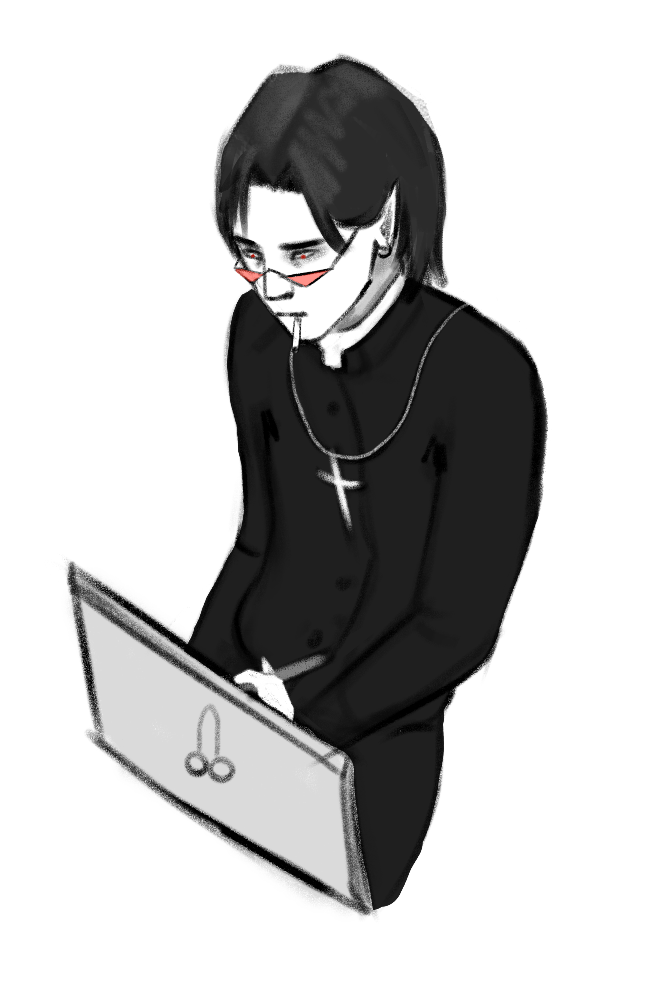

Biografia da Beatriz
24/08/2023
Sou a Beatriz, gosto de desenhar, faço BSI, gosto de comer legumes
obs: não gosto de tirar fotos, deixei um IRL
Coliseu
O Coliseu de Roma ou Anfiteatro Flaviano é um grandioso monumento histórico e arquitetônico de formato cilíndrico que está localizado na capital da Itália: Roma.
Construído na Antiguidade, o Coliseu de Roma atualmente é um dos pontos turísticos mais visitados da cidade.
Esse patrimônio histórico mundial revela a habilidade e as diversas técnicas utilizadas pelos arquitetos, engenheiros e construtores da Roma Antiga. É, portanto, um dos maiores exemplos da arquitetura romana.

O Coliseu é também chamado de “Anfiteatro Flaviano” uma vez que a Dinastia Flaviana estava no poder quando ele foi construído.
Acredita-se que o nome “Coliseu” surgiu porque ele foi construído sobre o lago da casa de Nero que contava com uma grande estátua do imperador chamada de “Colosso”.

O Coliseu de Roma foi construído no século I (cerca de 70 d.C.). Sua construção teve início no governo do imperador Vespasiano e foi concluído quando Tito, seu filho, estava no poder. No total, foram seis anos para erigir um dos mais emblemáticos símbolos do Império Romano.
A intenção principal era o entretenimento do povo.
Notredame
A Catedral de Notre-Dame de Paris é uma das mais antigas catedrais francesas em estilo gótico.
Construída entre 1163 e 1245 na Île de la Cité, a Catedral de Notre Dame de Paris é uma das catedrais góticas mais antigas do mundo. O nome da catedral significa Nossa Senhora e é dedicada à Virgem Maria.

Em Notre Dame foram realizados importantes acontecimentos, entre os quais vale destacar a coroação de Napoleão Bonaparte, a beatificação de Joana D’Arc e a coroação de Henrique VI da Inglaterra.
A arquitetura gótica substituiu as paredes grossas das igrejas românicas por colunas altas e arcos capazes de sustentar o peso dos telhados. Como consequência, os edifícios góticos ganharam um aspecto mais leve, e as janelas, mais amplas e altas, foram decoradas com belos vitrais coloridos que filtravam a luz natural, e com isso, criavam um clima de misticismo em seu interior.

No dia 15 de abril de 2019, a catedral de Notre Dame sofreu um grave incêndio que provocou danos significativos no telhado e derrubou a agulha da torre principal.

Museu do Ipiranga
Museu Paulista da Universidade de São Paulo, também conhecido como Museu do Ipiranga ou Museu Paulista, é o museu público mais antigo da cidade de São Paulo, cuja sede é um monumento-edifício que faz parte do conjunto arquitetônico do Parque da Independência.
/i.s3.glbimg.com/v1/AUTH_da025474c0c44edd99332dddb09cabe8/internal_photos/bs/2022/p/p/AKvOfIQqygvStPWHRsww/100335462-sc-sao-paulo-sp-02-09-2022-museu-do-ipiranga-espaco-passou-por-obras-de-restauracao-que.jpg)
O museu foi inaugurado oficialmente em 7 de setembro de 1895 com o nome Museu de História Natural. Este importante símbolo da Independência do Brasil está vinculado à Universidade de São Paulo desde 1963, como uma instituição científica, cultural e educacional que exerce pesquisa, ensino e extensão com atuação no campo da História.
É responsável por um grande acervo de objetos, mobiliário e obras de arte com relevância histórica, especialmente aquelas que possuem alguma relação com a independência do Brasil e o período histórico correspondente. Uma das obras mais conhecidas de seu acervo é o quadro "Independência ou Morte", pintado pelo artista Pedro Américo, em 1888

as atividades do Museu do Ipiranga se estendem por meio de programas educativos, como cursos e pesquisas científicas que fazem uso dos recursos humanos e do acervo permanente da instituição.
Maria fumaça
Museu Paulista da Universidade de São Paulo, também conhecido como Museu do Ipiranga ou Museu Paulista, é o museu público mais antigo da cidade de São Paulo, cuja sede é um monumento-edifício que faz parte do conjunto arquitetônico do Parque da Independência.

A primeira maria-fumaça foi fabricada em 1804, pelo britânico Richard Trevithick. O objetivo da máquina era substituir os animais que faziam o transporte de cargas pesadas. A primeira locomotiva do Brasil foi criada em 1852, porém suas primeiras viagens ocorreram apenas em 1854.

Passeio em trem antigo de vagões coloridos puxados por locomotivas restauradas, com música e vagão-restaurante.
Vaticano
Vaticano ou Cidade do Vaticano, oficialmente Estado da Cidade do Vaticano

O nome "Vaticano" já era usado na época da República Romana para o Ager Vaticanus, uma área pantanosa na margem oeste do Tibre em frente à cidade de Roma, localizada entre o Janículo, a Colina do Vaticano e Monte Mario, descendo para o Monte Aventino e até a confluência do riacho Cremera.

A Cidade do Vaticano é uma cidade-Estado que existe desde 1929. É distinta da Santa Sé, que remonta ao cristianismo primitivo sendo a principal sé episcopal de 1,5 bilhão de católicos romanos (latinos e orientais) de todo o mundo. Ordenanças da Cidade do Vaticano são publicadas em italiano; documentos oficiais da Santa Sé são emitidos principalmente em latim.
Topo